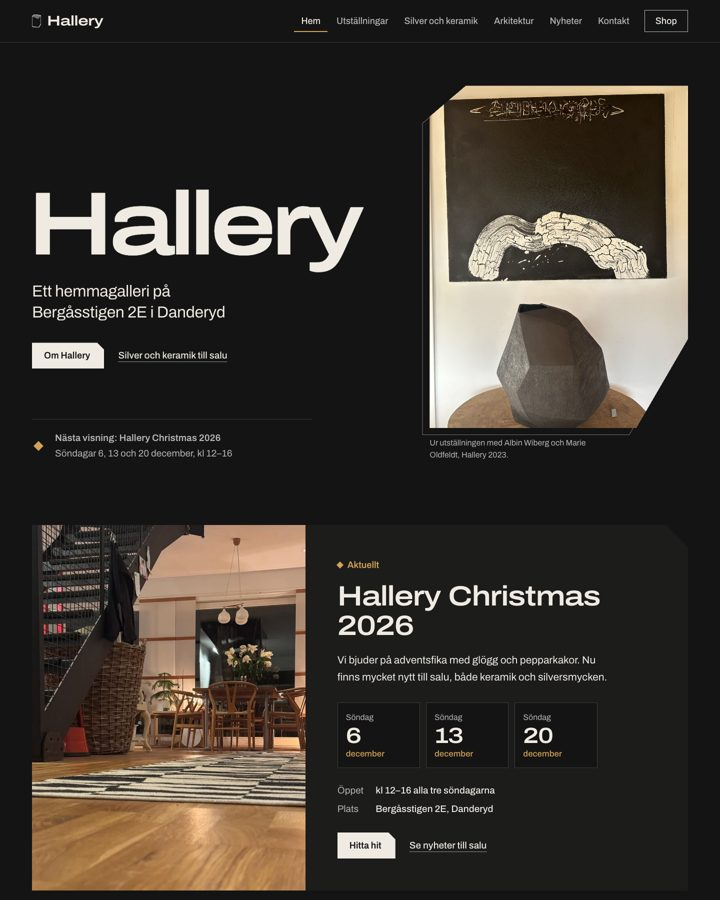
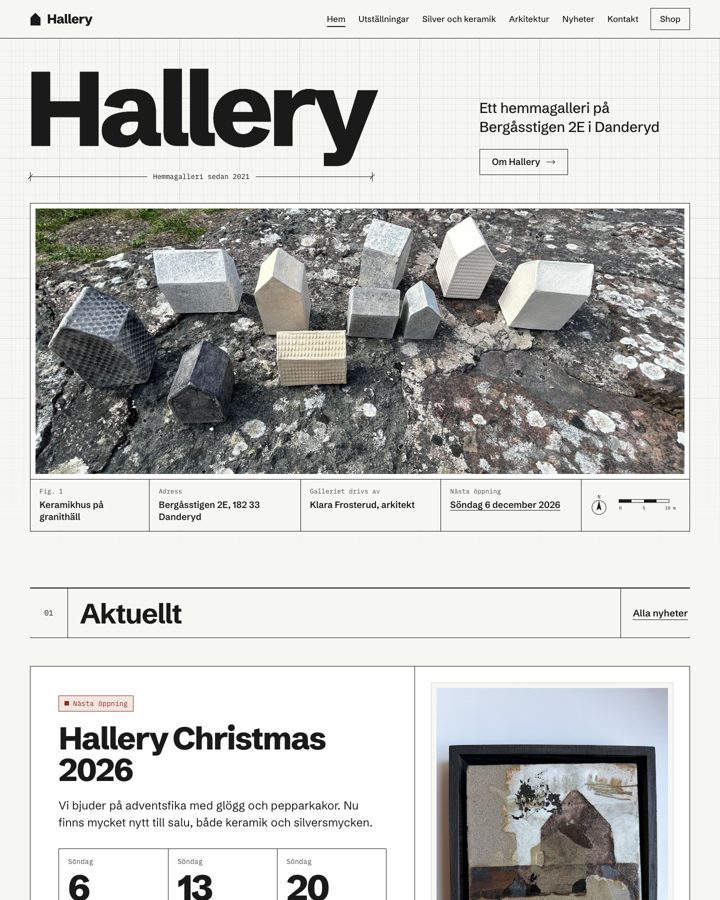
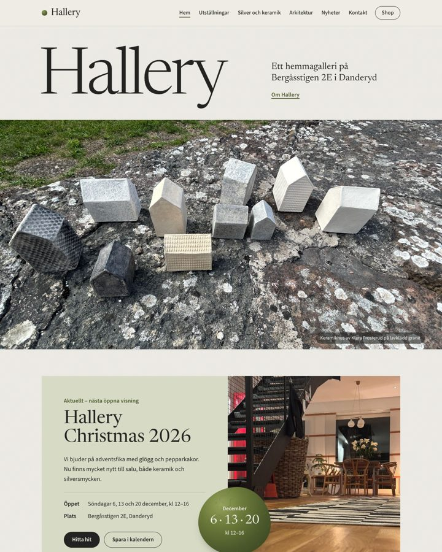
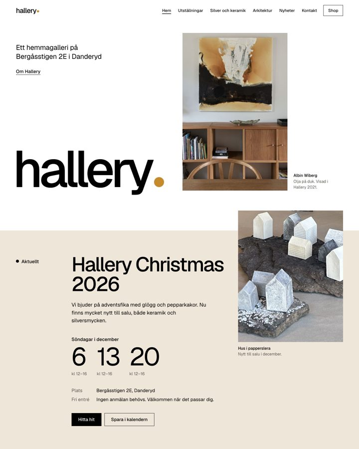
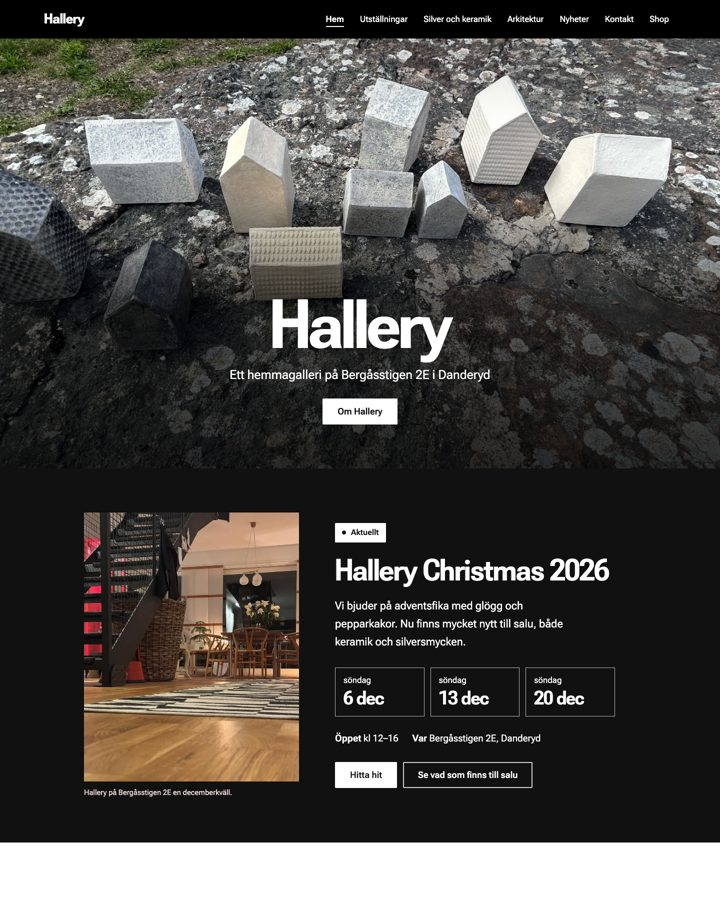

Hallery.se — fem designförslag
Klicka på ett förslag för att se hela startsidan. Alla har samma innehåll och funktioner — bara utseendet skiljer. Prova gärna även i mobilen. Exemplet under ”Aktuellt” är påhittat.

Förslag 1
Stealth
Mörkt och skulpturalt, som de facetterade svartbrända Stealth-vaserna. Silver som lyser mot grafit.
Visa förslaget →
Förslag 2
Ritning
Arkitektens ritblad: vitt papper, tunna linjer, exakt rutnät och ditt keramikhus som symbol.
Visa förslaget →
Förslag 3
Lav & granit
Natur och raku: varma stengrå toner, mossgrönt från rakuglasyren och en elegant serif.
Visa förslaget →
Förslag 4
Vita väggar
Som ett modernt galleri: mycket luft, verken i fokus, ek och ockra som enda accenter.
Visa förslaget →
Förslag 5
Klassisk
Din nuvarande hemsida, fast uppfräschad: samma bild, svarta meny och svartvita färger — men tydligare och modernare.
Visa förslaget →